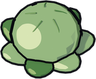
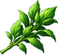

Sauerkraut
Obtaining
- Bought from Butcher Gustav for 8 gold
- Bought from Innkeeper Jakob for 8 gold
- Made with Cooking level 16 at a Stove or Campfire
Creation
| Skill | Makes | Needs | Where | Tool |
|---|---|---|---|---|
| Cooking 16 | 1 | 2 ×  Cabbage, 1 × Herb | Stove or Campfire |